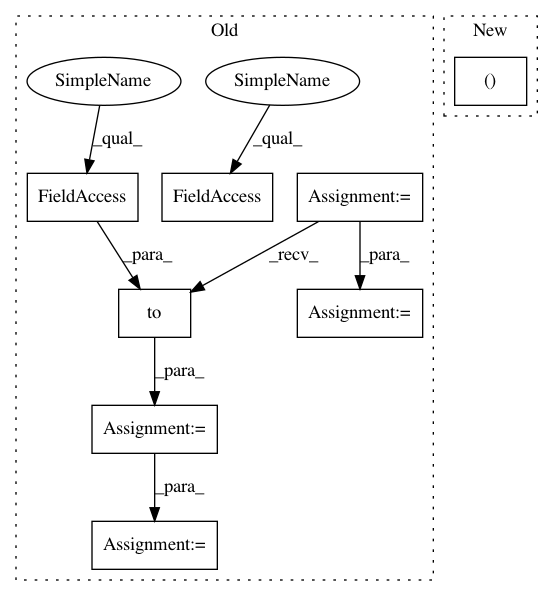

68e9addae4d913c82de5696ee950619c743118c8,torch_geometric/utils/metric.py,,mean_iou,#Any#Any#Any#Any#,149
Before Change
:rtype: :class:`Tensor`
pred, target = F.one_hot(pred, num_classes), F.one_hot(target, num_classes)
if batch is not None:
i = scatter_add(pred & target, batch, dim=0).to(torch.float)
u = scatter_add(pred | target, batch, dim=0).to(torch.float)
else:
i = (pred & target).sum(dim=0).to(torch.float)
u = (pred | target).sum(dim=0).to(torch.float)
iou = i / u
iou[torch.isnan(iou)] = 1
iou = iou.mean(dim=-1)
return iou
After Change
:rtype: :class:`Tensor`
i, u = intersection_and_union(pred, target, num_classes, batch)
iou = i.to(torch.float) / u.to(torch.float)
iou[torch.isnan(iou)] = 1
iou = iou.mean(dim=-1)
In pattern: SUPERPATTERN
Frequency: 3
Non-data size: 8
Instances
Project Name: rusty1s/pytorch_geometric
Commit Name: 68e9addae4d913c82de5696ee950619c743118c8
Time: 2019-06-30
Author: matthias.fey@tu-dortmund.de
File Name: torch_geometric/utils/metric.py
Class Name:
Method Name: mean_iou
Project Name: Scitator/catalyst
Commit Name: 43df540b512c616a882df1f35c8862fa332b9317
Time: 2019-01-20
Author: grinchuk.alexey@gmail.com
File Name: rl/agents/actor.py
Class Name: RealNVPActor
Method Name: forward
Project Name: rusty1s/pytorch_geometric
Commit Name: 68e9addae4d913c82de5696ee950619c743118c8
Time: 2019-06-30
Author: matthias.fey@tu-dortmund.de
File Name: torch_geometric/utils/metric.py
Class Name:
Method Name: mean_iou
Project Name: mozilla/TTS
Commit Name: aa40fe1aa0382bf5148d1475dd647def1d2ed332
Time: 2021-01-06
Author: erogol@hotmail.com
File Name: TTS/tts/models/speedy_speech.py
Class Name: SpeedySpeech
Method Name: forward